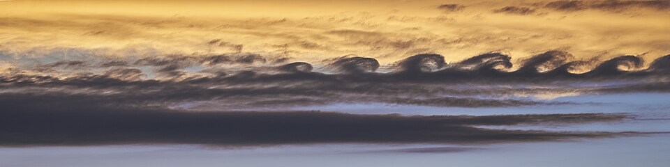
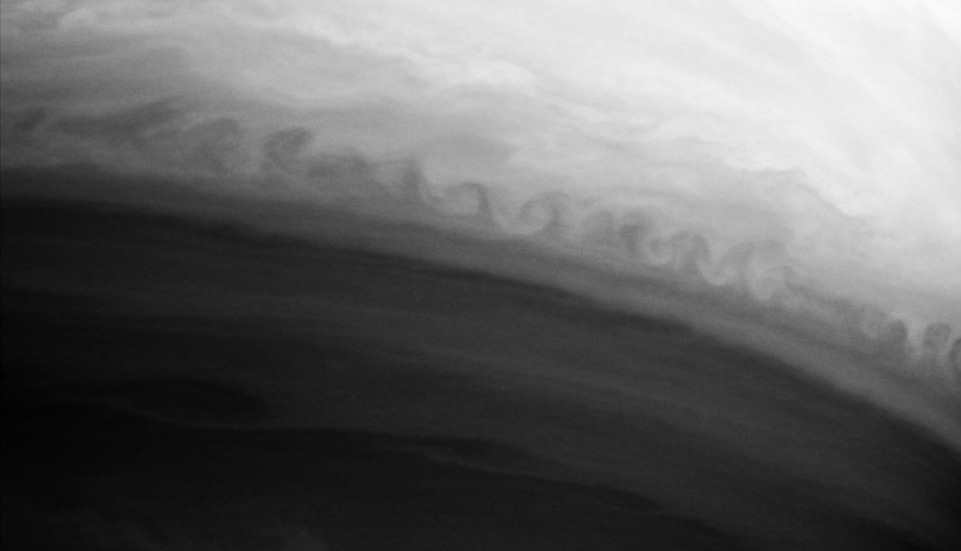

Dos capas que se deslizan, una lámina de vórtice que se enrolla
Algunas tardes se ven en el cielo nubes con forma de olas que rompen: una hilera de rulos perfectos, todos inclinados para el mismo lado. Son la huella de un fenómeno que aparece cada vez que dos capas de fluido se deslizan una sobre otra a distinta velocidad: la inestabilidad de Kelvin-Helmholtz.

David Tong, de la Universidad de Cambridge, la plantea así: dos fluidos, el más liviano arriba, que se mueven en la misma dirección pero a velocidades distintas [1]. Entre ellos hay una superficie de separación plana. La pregunta es si esa situación es estable, y Tong adelanta la respuesta: no lo es [1]. Si la superficie se ondula un poco, la ondulación crece.
Tong explica el mecanismo con la presión. Sobre una ondulación, el fluido rápido tiene que pasar por encima de las crestas, y la diferencia de presión a lo largo de toda la ondulación empuja las crestas hacia arriba y los valles hacia abajo [1]. La ondulación se amplifica sola.
Hay otra manera de verlo. Como las velocidades a cada lado de la superficie son distintas, toda la vorticidad del flujo está concentrada en la propia superficie: es una lámina de vórtice [1]. La inestabilidad es una deformación de esa lámina, que, cuando entran en juego los efectos no lineales, se enrolla [1]. Según Tong, ese enrollamiento produce, entre otras cosas, las hermosas formaciones de nubes en forma de olas que rompen [1].
El mazo de cartas que se tuerce: si empujás la mitad de arriba de un mazo de cartas hacia un lado y la de abajo hacia el otro, la frontera entre las dos mitades no se queda plana: se arruga. En un fluido, esa arruga no tiene nada que la frene, crece y termina enrollándose como un rulo.
Si no hubiera nada que la frenara, la inestabilidad crecería más rápido cuanto más corta fuera la ondulación [1]. Tong señala dos efectos que lo impiden [1]:
Y la gravedad, si el fluido de abajo es más denso, frena las ondulaciones largas [1]. Con las dos cosas juntas, la inestabilidad solo arranca si la diferencia de velocidades supera un mínimo [1].
Tong hace la cuenta para el viento sobre el agua, con la densidad del aire, la del agua y la tensión superficial [1]. El viento necesita una velocidad de unos 7 m/s para empezar a formar olas por esta inestabilidad, y las ondulaciones que crecen tienen una longitud de onda de un par de centímetros [1]. La conclusión de Tong es tajante: el viento, por esta vía, solo produce olitas capilares muy chicas; la inestabilidad de Kelvin-Helmholtz no es la responsable de las grandes olas del océano [1].
Un caso límite: si las dos capas están quietas y la de arriba es la más densa, la misma matemática da la inestabilidad de Rayleigh-Taylor [1]. Las dos son, en el fondo, la misma familia de inestabilidades de una superficie entre dos fluidos.

Dos capas de fluido que se deslizan a distinta velocidad no pueden mantener plana la superficie que las separa: cualquier ondulación crece, la lámina de vórtice se enrolla y forma rulos. La viscosidad y la tensión superficial frenan las ondulaciones cortas y la gravedad las largas, así que hace falta una diferencia de velocidad mínima. En el cielo deja nubes como olas; sobre el mar, apenas olitas de centímetros.
Pregunta para la comunidad: Si una bandera flamea con el viento, ¿te parece que tiene algo que ver con esta inestabilidad? ¿Qué capas se estarían deslizando una sobre otra?